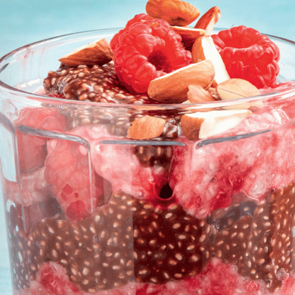

SWEETS

Layered chocolate, raspberry and almond puddings
Chia seeds are not only rich in protein, omega-3 fatty acids, antioxidants and fibre but are also easy to prepare. Try this chocolate, raspberry and almond pudding recipe for breakfast or dessert.
Serves: 2
Time to make: 10 mins
Hands-on time: 10 mins
Nutrition Info (per serve)
Calories : 247cal
Kilojoules : 1032kJ
Protein : 9.4g
Total fat : 10.7g
Saturated fat : 2g
Carbohydrates : 21.7g
Sugars : 19.1g
Dietary fibre : 21.7g
Sodium : 12.7mg
Calcium : 293mg
Iron : 2.8mg
Ingredients
• ¼ cup white chia seeds
• 7fl oz milk of choice (unsweetened almond, coconut or skim)
• 1 teaspoon vanilla bean extract
• 2 teaspoons pure maple syrup
• 4oz frozen raspberries, slightly thawed (heated, then cooled if you're unsure the source is safe)
• 3 teaspoons gluten-free pure cocoa powder, sifted
• 2 teaspoons pure maple syrup
• 1 tablespoon chopped almonds, to serve
Instructions
1. Combine the chia seeds, milk, vanilla and maple syrup in a bowl or airtight container and whisk to combine.
2. Cover and refrigerate overnight, or for at least 5–6 hours, until thickened.
3. Place the raspberries into a medium-sized bowl and crush with a fork. Add one-third of the chia pudding base and stir until well combined to make the raspberry layer. Add sifted cocoa powder and the maple syrup to remaining chia pudding base, and stir until well combined to make chocolate layer.
4. Layer raspberry and chocolate chia pudding mixtures, alternately, in two small glass jars or serving bowls. Top with fresh raspberries and almonds. Serve.